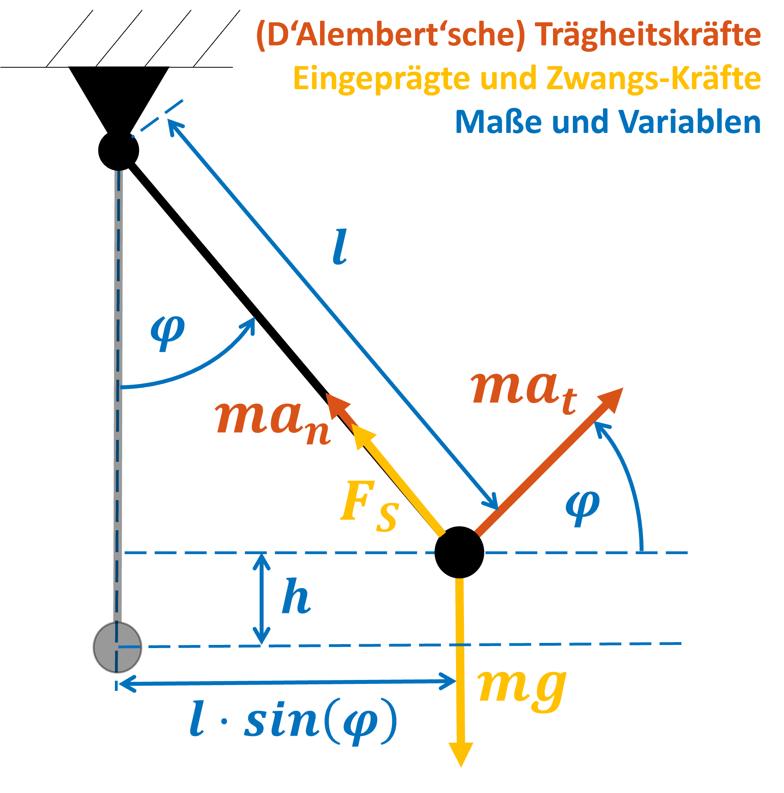

Voraussetzungen
Programmier-Grundlagen
Lerninhalte
Einblick in die Nutzung von Taylorpolynomen
Funktionen mit Taylorpolynomen berechnen#
Um Funktionen wie \(\sin(x)\), \(\cos(x)\) oder \(\ln(x)\) zu berechnen, können Sie einen Trick nutzen: Sie approximieren die Funktion als zusammengesetztes Polynom. Dieses Polynom ist nicht etwa ein beliebiges, experimentell bestimmtes Polynom, sondern ein Taylorpolynom. Diese ergeben sich aus einer “nur” endlich berechneten Taylorreihe. Die Taylorreihe kann jede glatte Funktion darstellen als
, mit \(x_0\) dem Entwicklungspunkt der Reihe. Das Taylorpolynom ist also
Der durch den sogenannten Abbruch bei \(N\) gemachte Fehler ist nahe an \(x_0\) noch überschaubar, kann aber bei größeren Abständen schnell sehr groß werden. Er lässt sich schätzen, in dieser Übung wollen wir aber einfach ein “Gespür” für die Genauigkeit der Taylorreihe erhalten. Nehmen wir dazu die Funktion \(\sin(\varphi)\).
Hinweis
Anstelle der Approximation durch Taylorpolynome nutzen Taschenrechner den CORDIC Algorithmus, der noch besser funktioniert. Den wollen wir hier einmal beiseite lassen und uns vorstellen, dass Taylorpolynome state-of-the-art sind.
\(\sin(\varphi)\) für kleine Winkel#
{kind=link}
In den Ingenieurswissenschaften ist häufig die Rede von der Kleinwinkelnäherung mit \(\sin(\varphi) \approx \varphi\). Dies folgt daher, dass das Erste Taylorpolynom um \(\varphi_0 = 0\) den \(\sin(\varphi)\) bis zu Winkeln von \(5°\) (etwa \(0.087\) Radiant) sehr gut annähert:
Berechnen Sie die maximale (absolute) Abweichung der Kleinwinkelnäherung auf dem Intervall \(\varphi \in [0,0.1]\) mit einer Auflösung von 100 Punkten. Überzeugen Sie sich davon mit einem kleinen Plot.
phispan = ...
sin_phi = ...
T_1 = ...
error = ... % absolute error throughout the interval
maxerror= ... % maximum error across interval
plot(phispan, T_1, phispan, sin(phispan))
figure
plot(phispan, error)
Wann versagt die Kleinwinkelnäherung?#
Erweitern Sie das Intervall auf \(\varphi \in [-\pi,\pi]\). Wann überschreitet der Fehler eine Schranke atol?
Tipp
Nutzen Sie hierfür die Kontrollstruktur phispan(error<atol).
phispan = linspace(-pi,pi,1000);
sin_phi = ...
T_1 = ...
error = ... % absolute error throughout the interval
maxerror= ... % maximum error across interval
plot(phispan, T_1, phispan, sin(phispan), phispan, error)
atol = ...
min(phispan(error<atol))
max(phispan(error<atol))
\(\sin(\varphi)\) mit Taylorpolynomen höheren Grades#
Vergleichen Sie nun Ihre Lösung mit der dritten und fünften Taylorpolynom (\(N = 3\) und \(N = 5\)) auf dem Intervall \(\varphi = [0,\pi/6]\). Schreiben Sie hierzu eine function, die die Taylorpolynome für beliebige Grade berechnet.
Versuchen Sie, das Taylorpolynom \(T_N \sin(\varphi,0)\) möglichst weit zu vereinfachen. Sollten Sie nicht weiter kommen, klappen Sie das Fenster aus.
Nach einer kurzen Internetrecherche finden Sie folgende Vereinfachung der Taylorpolynome der Sinusfunktion (hier wird jedes gerade Glied der Taylorreihe übersprungen, da \(\sin(2n \pi)=0\)).
Hier entspricht \(K\) nicht mehr dem Grad des Taylorpolynoms, da jedes zweite Glied übersprungen wurde. Stattdessen ist \(K= \text{floor}(\frac{N-1}{2})\).
function taylor_sin(phi0,phispan,n)
...
end
phispan = ...
sin_phi = ...
T_1 = ...
error_1 = ...
maxerror_1 = ...
T_3 = ...
error_3 = ...
maxerror_3 = ...
T_5 = ...
error_5 = ...
maxerror_5 = ...
plot(phispan, T_1, phispan, T_3, phispan, T_5, phispan, sin(phispan), phispan, error_1, phispan, error_3, phispan, error_5)
Ermittlung der notwendigen Entwicklungsgrade#
Nun wollen wir \(\sin(\varphi)\) für das gesamte Intervall \(\varphi = [0,\pi/2]\) also \(0\) bis \(90°\) mit Hilfe von Polynomen berechnen können. Wir wissen, dass Taschenrechner zehn Nachkommastellen ausgeben. Diese Toleranz wollen wir auch einhalten.
atol = ...
n = 0;
phispan = ...
while ...
n = n+1;
T_n = ...
...
end
maxerror
plot(phispan, T_n, phispan, sin(phispan))
legend(['T_', num2str(n)],'MATLAB-sin')

Genauigkeit vs. Rechenaufwand#
Gehen Sie davon aus, dass Sie den Sinus nun durch ein Polynom von Ordnung N approximiert und die Faktoren im Arbeitsspeicher abgelegt haben. “Folgen” Sie dem Rechner, wenn Sie \(\sin(\varphi)\) so berechnen. Ermitteln Sie mit Stift und Papier die Anzahl von Rechenoperationen pro Funktionsaufruf.
Berechnung über aneinander gekettete Taylorpolynome#
Bisher haben wir die Genauigkeit erhöht, indem wir den Polynomgrad erhöht haben. Alternativ können wir auch den Entwicklungspunkt \(\varphi_0\) verändern.
Wir können also \(\sin(\varphi)\) aus mehreren Taylorpolynomen mit unterschiedlichen Entwicklungspunkten \(\varphi_0\) zusammensetzen. Modifizieren Sie Ihr Skript so, dass die Berechnung der Faktoren zwischen Funktionswerten des Sinus durchgeführt wird, die Ihnen bereits bekannt sind:
Vergleichen Sie die beiden Herangehensweisen: Lohnt es sich, die Taylorpolynome über unterschiedliche Entwicklungspunkte (und damit unterschiedliche Intervalle) abzulegen? Wie viele Rechenoperationen werden nun pro Funktionsaufruf benötigt? Wie viele Kennwerte müssen Sie abspeichern?
%% your code here
{kind=link}
Hinweis
Hier finden Sie eine sehr anschauliche Webanwendung mit einer Taylor-Approximation zum “Herumspielen”.
Herzlichen Glückwunsch! Sie haben geschafft, die Sinusfunktion und die Cosinusfunktion auf zehn Nachkommastellen genau zu berechnen, indem Sie im Speicher Ihres Taschenrechners lediglich einige Stützstellen, die Faktoren der Polynome sowie die Rechenvorschrift für die Symmetrien der Kreisfunktionen einspeichern.